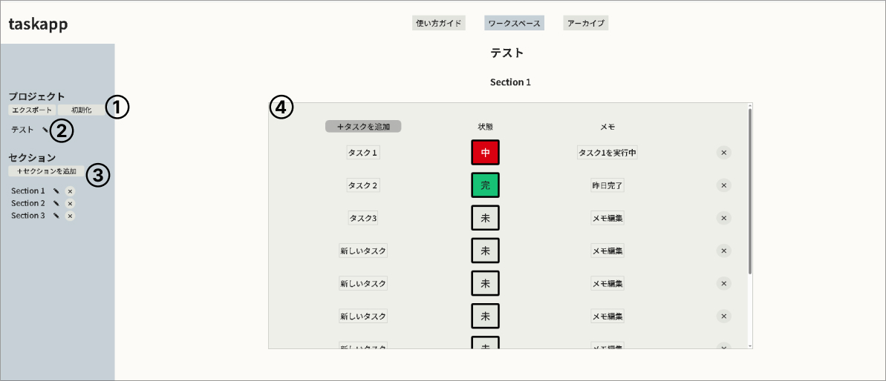

使い方ガイド
ワークスペースの使い方

１ エクスポート／初期化
現在の作業内容をアーカイブとして保存（エクスポート）できます。
エクスポート後、ワークスペースは初期状態に戻ります。
この操作によって、作業の区切りを明確にできます。
２ プロジェクト名
現在のプロジェクト名が表示されます。
プロジェクト名は編集可能で、作業内容に合わせて自由に変更できます。
アーカイブ時にも、この名前が識別情報として使われます。
３ セクション
タスクを分類するためのエリアです。
セクションは最大3つまで作成できます。
セクションを切り替えることで、作業の焦点を整理できます。
４ ワークスペース（作業エリア）
タスクを実際に操作・管理するメインエリアです。
タスク名やメモは編集可能です。
ステータスボタンを押すことで、タスクの状態を切り替えられます。
タスクは完了状態になっても自動では消えません。
不要になったタスクは、必要に応じて手動で削除します。
アーカイブの使い方

１ アーカイブカード
エクスポートしたプロジェクトがカード形式で表示されます。
保存日時、総タスク数、未完了タスク数を確認できます。
最新のプロジェクトが上（または左）に表示されます。
２ インポート
選択したプロジェクトをワークスペースに復元します。
インポート時にはIDが再生成され、現在の作業と干渉しません。
３ 削除
アーカイブされたプロジェクトを削除します。
削除したデータは元に戻せません。